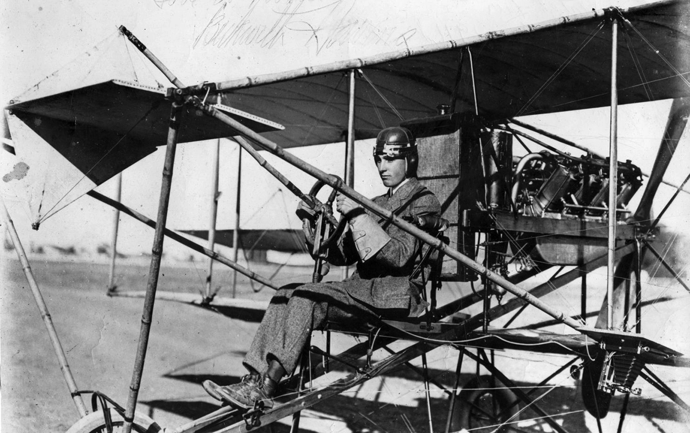
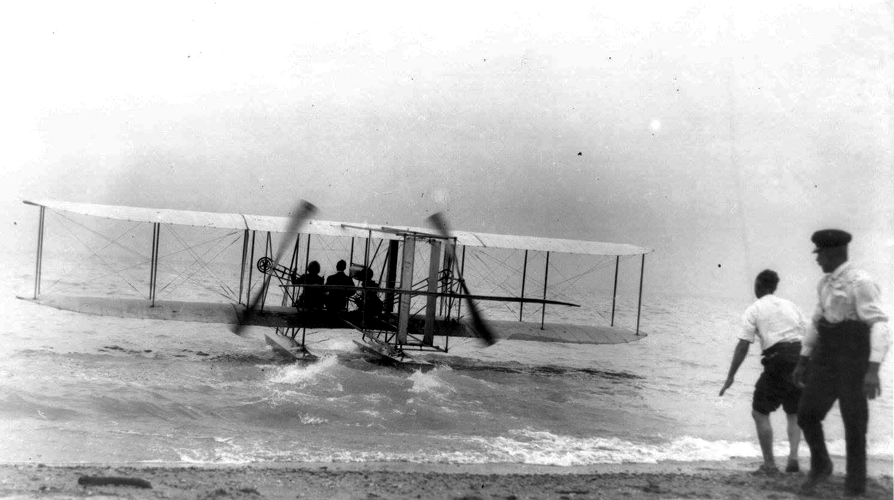

London's Air Age
From Lambeth to Crumlin
Scroll to explore key moments in London's aviation history.
Throughout the history of manned flight, civilian and military flying have advanced together, each one pushing the other to greater heights.
Successful flight in North America began with the Wright Brothers, two bicycle makers from Ohio, who made their first manned, powered flight in 1903. They were soon joined by Glenn Curtiss, a motorcycle builder and racer from Hammondsport, New York, who, in 1907, was invited to join the Aerial Experiment Association (AEA), a company started by Alexander Graham Bell and J.A.D. McCurdy to design and build aircraft.
Curtiss provided engines for the Association's aircraft including the Silver Dart, which flew for the first time in Canada at Baddeck, Nova Scotia, on February 23, 1909. McCurdy, who flew it that day, became the first man to fly in the British Empire. The Silver Dart, designed by McCurdy, a Canadian, was built at Hammondsport, and shipped to Baddeck. The AEA was disbanded in 1909 by mutual agreement.
Many Londoners saw their first aircraft on May 25, 1912 - a Curtiss Model E - flown by Beckwith Havens who had taken off from Carling Heights, near Wolseley Barracks (now the Royal Canadian Regiment Museum) on a 20-minute flight over the city. Two months later, thousands watched a Wright-Burgess hydroplane perform for several days over Port Stanley, flown by Walter Brookins.
Both were "pusher" style aircraft with propellers mounted at the back pushing it through the air. The Wright models used two, chain-driven, propellers while on the Curtiss aircraft, the propeller was connected directly to the engine.

Many Londoners see their first aircraft - a Curtiss Model E - flown by Beckwith Havens who took off from Carling Heights, near Wolseley Barracks (now the Royal Canadian Regiment Museum) for a 20-minute flight over the city.

Thousands watch Walter Brookins take off in a Wright-Burgess hydroplane at Port Stanley with his passenger Miss Dora Labatt, daughter of the London brewer. It was the first flight in Canada by a seaplane.
Unsuccessful at Petawawa, McCurdy took over a flying school in Toronto that had been opened by Glenn Curtiss. He also ran a Curtiss factory in Toronto that produced the Jenny. The JN-4, known as the "Jenny", became the standard training aircraft at the flying schools which the Royal Flying Corps (RFC) opened in Canada towards the end of the war. Many of the estimated 13,000 Canadians who served in the RFC or in the Royal Navy Air Service were trained on them.
A non-permanent (militia-style) Canadian Air Force (CAF) was created in 1920 to which a series of civilian duties were assigned in order to keep planes in the air and pilots in practice, including fire watches, coastal patrols, and mapping districts from the air.
The Department of National Defence was created in 1923 which took control of all flying in Canada. Then, in 1924, the Chief of the General Staff, Major-General J. H. MacBrien, created a separate air force which would have a unique military mission separate from the army and the navy. It would be a force modeled on the Royal Air Force (RAF), created in 1918 by merging the RFC with the Royal Navy Air Service. The new RCAF even adopted its motto per ardua ad astra (through adversity to the stars), thought it now uses the original CAF motto Sic Itur Ad Astra.
Many Londoners saw their first aircraft on May 25, 1912 - a Curtiss Model E - flown by Beckwith Havens who had taken off from Carling Heights, near Wolseley Barracks (now the Royal Canadian Regiment Museum) on a 20-minute flight over the city. Two months later, thousands watched a Wright-Burgess hydroplane perform for several days over Port Stanley, flown by Walter Brookins.
While the pioneers of flight soon began promoting the use of their inventions as potential weapons, it was the First World War that greatly accelerated the evolution of manned flight in that direction.
McCurdy brought the Silver Dart to Petawawa, just months after his successful flight at Baddeck, to demonstrate it for the Canadian militia.
The Wrights were demonstrating their Military Flyer to the US Army Signal Corps in 1908, and Curtiss sold his first military aircraft in 1911.
No other instances of aircraft appearing over London were recorded until 1918 when Capt. V. P. Cronyn flew what was likely a Curtiss JN-4 from a Royal Flying Corps training school in Beamsville to London, landing on the parade square at Wolseley Barracks on Carling Heights.
By the time Capt. Cronyn had been posted to Beamsville in 1918, he had already served on the Western Front where he had shot down at least 7 enemy aircraft making him one of the war's 171 Canadian "aces". (Fliers with five or more kills). Cronyn and his brother Richard were among the many World War One flyers who saw that flying would continue to evolve in Canada after the war ended.
Sic Itur Ad Astra | "such is the way to the stars"
Charles Lindbergh's flight across the Atlantic in the Spirit of St. Louis in May of 1927, ignited great public interest in aviation.
It was not long before a London-to-London flight was proposed by Carling Brewery, who offered a prize of $25,000 for a successful flight from London, Canada to London, England.
The men selected, Capt. Terrence Tully and Lieut. James Medcalf, were both veteran fliers of the Great War and had both been working as civilians, flying forest fire patrols in Ontario.
Thousands watched as they flew out of London in their Stinson Detroiter on September 1, 1927. After several stops and a final refuelling in Harbour Grace, Newfoundland, they took off for England but were never heard from again. The $25,000 was placed in a trust for the grieving families.
The road to a permanent airport in London lay through Pittsburgh. In 1926, London was one of a number of Chambers of Commerce that sent delegates to a special meeting there on the future of aviation.
When they returned, the London Chamber immediately set up a committee chaired by Ernest Moore, an investment broker. The committee started looking for possible locations in the London area, finally selecting a farm just off Wharncliffe Road, then Highway 4, on the way to Lambeth.
The city's assistance was solicited, and Council put a By-law on the December, 1927 ballot asking the voters to approve the purchase of the site at a cost of $20,000.
Both J. A. Wilson, the Controller of Civil Aviation, and General MacBrien came to London in November of 1927 to bolster support for the By-law. Wilson spoke to the founding meeting of the London Flying Club where he offered the club two De Havilland Moths for their use.
The club, which was incorporated the following March, would be the airport's main tenant. Established by a group of fliers, many of whom were war veterans, it would offer flying lessons to interested parties, men and women. Richard Cronyn was its founding president.
Days later, General McBrien addressed the Rotary Club. Both talks were well covered by the press, but they failed to convince a majority of the electorate, and the By-law was defeated.
Undaunted, Moore set up the London Airfield Company which raised the funds needed to buy the farm and build the airfield. London's first airport officially opened on August 24, 1928. J. A. Wilson was on hand to formally present the two Moth aircraft to the flying club and General MacBrien also attended. Now retired, he was representing International Airways Limited.
The airfield at Lambeth remained in use even after a new London Airport opened at its present location in 1940. It closed for good in 1942, when a “listening station” was established beside the air strip to intercept communications between German submarines in the Gulf of St. Lawrence. In 1949, after it sold the land, the London Airfield Company was dissolved and its shareholders paid.
In 1929, J. A. Wilson, as head of civil aviation, began the creation of a Trans-Canada airway, selecting sites and planning airports. A Department of Transport, created in 1936 with C. D. Howe as minister, took over civil aviation. Trans-Canada Airlines (TCA) was created in 1937 to link the airports along the air route.
In London, City Council took up the offer of assistance from the Federal Government to build a new airport large enough for the aircraft to be used by the TCA.
A site on the Crumlin sideroad was selected for its flat terrain and easy access to the city. Work on the airport began on September 9, 1939, the day before war was declared.
The site was soon added to a list of over 100 locations where training schools were to be built as part of the British Commonwealth Air Training Plan. The schools would train men from throughout the Commonwealth in preparation for service as either air or groundcrew wherever they were needed.
The RCAF would rely on Canada's flying clubs to provide basic training for each prospective pilot. In London, members of the flying club operated the #3 Elementary Flying Training School which opened at Crumlin Airport on June 24, 1940.
The new airport itself was officially opened on July 27th, 1940, by Minister Howe. TCA service began on August 1st.